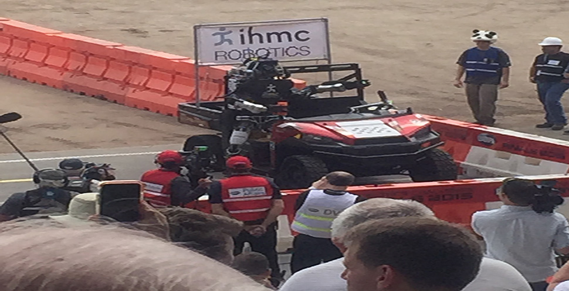

<div id="single-portfolio">
	<div id="portfolio-details" class="container">
		<a class="close-folio-item" href="#"><i class="fa fa-times"></i></a>
		
		<div class="row">
			<div class="col-sm-9">
				<div class="project-info">
					<h3>DARPA Robotics Convention</h3>
					<p>Members met at the <a href="http://archive.darpa.mil/roboticschallenge/">DARPA Robotics Convention</a>, an event which was a prize competition funded by the US Defense Advanced Research Projects Agency. It aimed to develop semi-autonomous ground robots that could do "complex tasks in dangerous, degraded, human-engineered environments" which would be extremely useful in assisting humans in responding to natural and man-made disasters.</a></p>
					<p>The DRC Finals challenged participating robotics teams and their robots to complete a difficult course of eight tasks relevant to disaster response, among them driving alone, walking through rubble, tripping circuit breakers, turning valves and climbing stairs.</p>
					<p>While many of robots seemed to have trouble when we watched some of the robots compete in the timed challenge. Many spectators, like us, were rooting for robots (and the teams behind them) to accomplish the above tasks as well as lamenting when they fell or failed to complete a task. While, the event was enjoyable for the spectators, who appreciated the efforts of the teams behind these robots, it showed that we are still quite far from the robots that we see in movies and television.</p>
				</div>
			</div>
			<div class="col-sm-3" style="padding-left:15px;padding-right:15px;">
				<div class="project-details">
					<h3>Event Details</h3>
					<p>For: SEC Members</p>
					<p>Date: 5-6 June 2015</p>
					<p>Tag: Computer Science, Robotics, Events</p>
				</div>  
			</div>
		</div>
	</div>
</div>